Editor
Approved application · approved logoEvery image below is an actual canonical PNG. Open an image for its full resolution. These are authored design scenes, not current-app browser captures.
Table row actions
table-row-1Actions and implementation pointers
× · Select row · Insert row above · Insert row below · Delete row · Move row up
apps/web/src/components/editor/document-toolbar.tsxpackages/better-editor/src/engine/suggestions.tspackages/better-editor/src/ui/context-menu.tsx

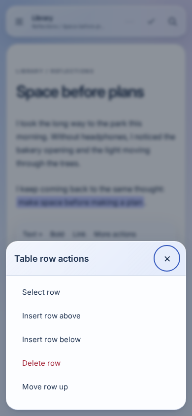
SHA256 e2315dcd912d482d8eedc936af913bf30a78f6451161e3a29d1610780a1c9d06

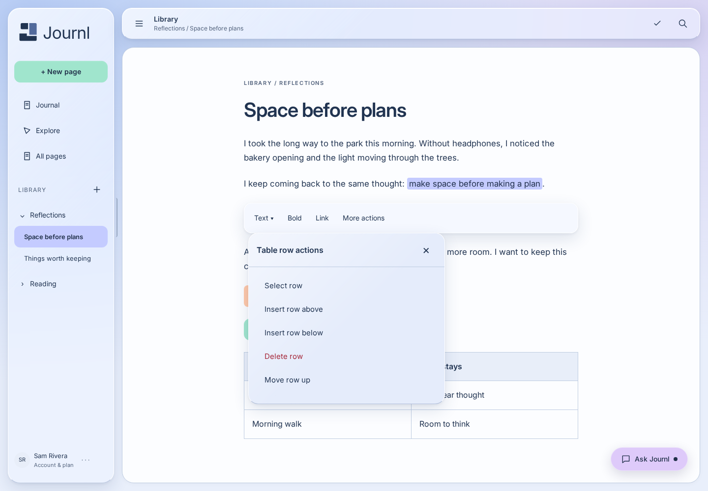
SHA256 9513287bc53d23871404a3c849c0585d59894a910041be62cea91b6038c91e08

SHA256 e761a8a65ff69eb9b41d1e37a5d8d230d85dea136d2acf8738e8a5d9ea9297c3

SHA256 f9b6c47b935829287a8237c3945f735ea0294ce219e7c0e83bf0ada874185030
Table row actions
table-row-2Actions and implementation pointers
× · Move row down · Add header row · Remove header row
apps/web/src/components/editor/document-toolbar.tsxpackages/better-editor/src/engine/suggestions.tspackages/better-editor/src/ui/context-menu.tsx

SHA256 ce57c289ebff2fc5578bc84ab7d84baed8e1d09cafcbad2c6766045840256afa

SHA256 d8fc09b4ecb3e3347212a90891832a398603c48cacd580f5479388b6d0115877

SHA256 fde782651885fe97727eda21d28ba1cdd586a77f7dcd8941f1e63cea13f75fbc

SHA256 8eaf1b58692f310c8ffd76efd3c39cfe56e1a6628e7a6d4f9176f50a9d747909
Table column actions
table-column-1Actions and implementation pointers
× · Select column · Insert column left · Insert column right · Delete column · Move column left
apps/web/src/components/editor/document-toolbar.tsxpackages/better-editor/src/engine/suggestions.tspackages/better-editor/src/ui/context-menu.tsx

SHA256 e4f348a45d7f67bb3e31a6baf52bde08d15f1a939887b7029703b42cc729ee89

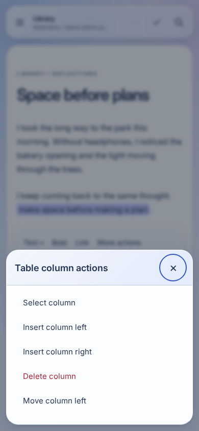
SHA256 16f7fea794c38bcbe767ff0acaade701fbed957543cee7b69e6cd5a559c1d749

SHA256 1c060dfb2ad0098009d97b4d3dd44c2645340c03550e26d4018f28c439d76003

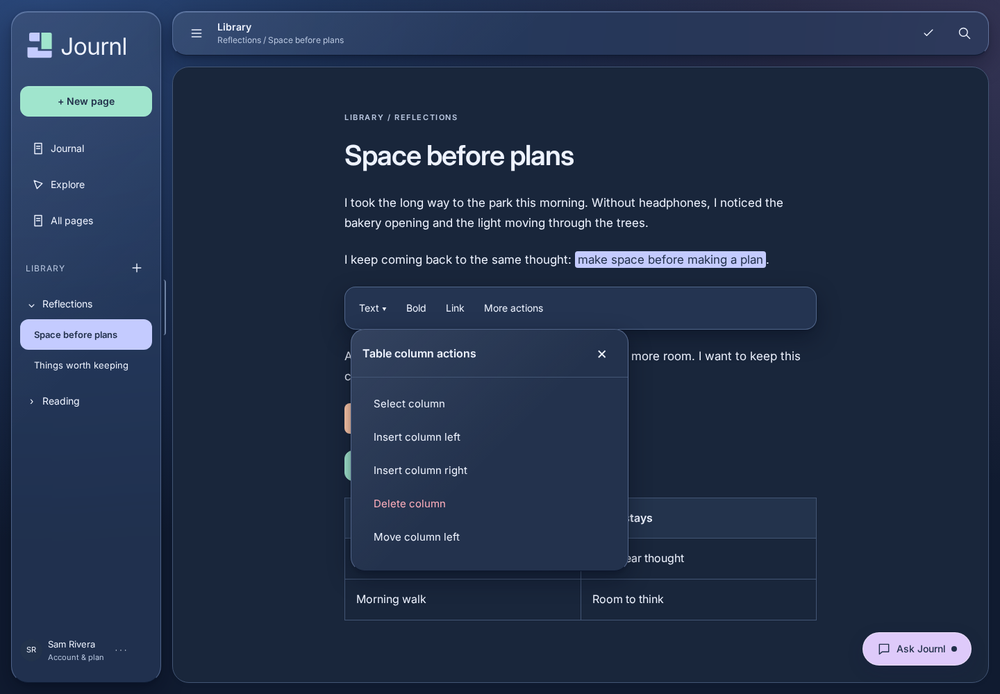
SHA256 5bb571ce9a42457d7608230e66574ad19caf841fdefa5bdcb1ce83f18d6391db
Table column actions
table-column-2Actions and implementation pointers
× · Move column right · Narrow column · Widen column · Add header column · Remove header column
apps/web/src/components/editor/document-toolbar.tsxpackages/better-editor/src/engine/suggestions.tspackages/better-editor/src/ui/context-menu.tsx

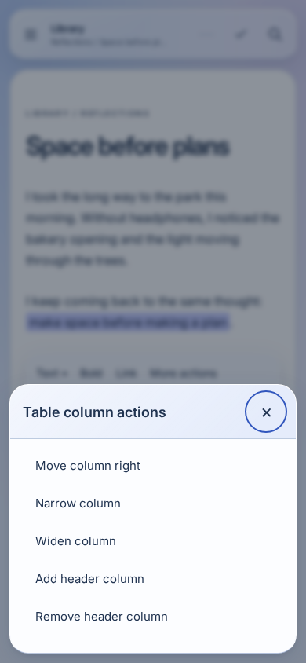
SHA256 9081c30591a540cbf7169b132bb7e4d374189acf78ddcb1cbed58fa677cb7ac4

SHA256 79929cdb277c321a01db7618a3963e91a341f5135c5f087b89f8be6060585fb2

SHA256 23ecd110e644b177dd975140b75ddc9d017ac41b4de50c3118b9b61a10cfc78e

SHA256 a885a573a07dfc74635c74866e1e27f5cb36ed81bff4eb93ea849aeacf6ea646
Table cell actions
table-cell-1Actions and implementation pointers
× · Select cell · Merge cells · Split cell · Add row · Add column
apps/web/src/components/editor/document-toolbar.tsxpackages/better-editor/src/engine/suggestions.tspackages/better-editor/src/ui/context-menu.tsx

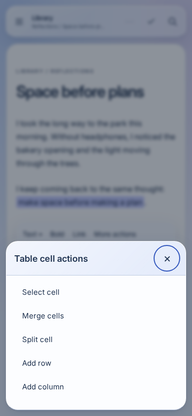
SHA256 fc3e5357b3ad1c7d218194e97e3e0671bf4894f91e1f6d8f1836f0079299177f

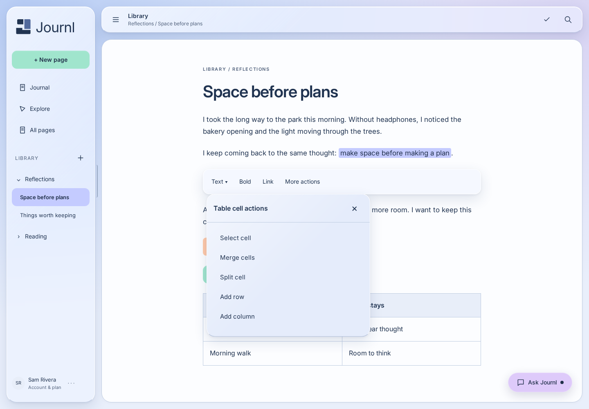
SHA256 df7a30c2e307358e0d5a2600f75d60e9e687e87be65b871538484009f2f689e8

SHA256 a730969b90fff969da695c06156f772b4518d4af0de621ca32b4ee6d70842c32

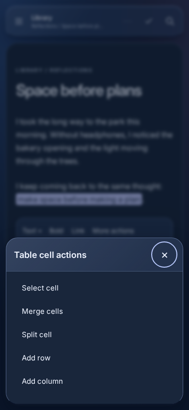
SHA256 9fcb0ccc0dc0e33a51617904d58bc61c9197f24cb1d68b57660051a22ff96e72
Table cell actions
table-cell-2Actions and implementation pointers
× · Delete table
apps/web/src/components/editor/document-toolbar.tsxpackages/better-editor/src/engine/suggestions.tspackages/better-editor/src/ui/context-menu.tsx

SHA256 40e1366dd25b751cee2b5d6b5bdf54892bec930da4cc5cb4a505c5f8ce94a9d1

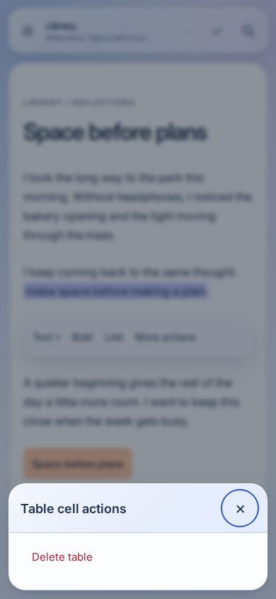
SHA256 c0e2a7510a8a8142abf43bfcbe98f84248c7df6ea8804900ad2df33d615402c6

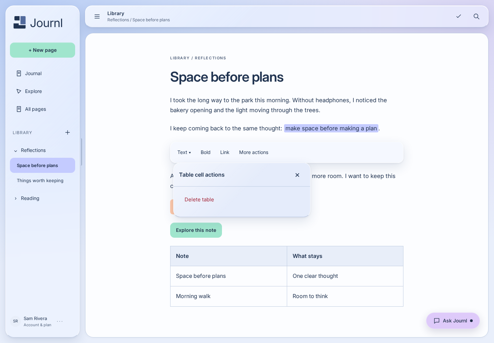
SHA256 e4ed5a8adb45a57c3928eb12dd46d80f9784469d4a7fceee8a441e73b8564e63

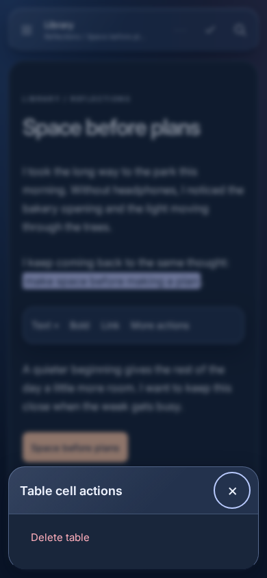
SHA256 2c879fb19bdce6e71c90e26ced6a438cf445e6707ff4b333e07c0053d8760d7c
Table · selection
table-state-selectionActions and implementation pointers
+ New page · Journal · Explore · All pages · ⌄ · Reflections · › · Reading · Cancel · Merge cells · Ask Journl · Today’s Journal · Close · Instant · Thinking
apps/web/src/components/editor/document-toolbar.tsxpackages/better-editor/src/engine/suggestions.tspackages/better-editor/src/ui/context-menu.tsx

SHA256 f87def58ae37f528281a17f6405e936942b8ebae0d852cb1c7c5e22537d90400

SHA256 5a6982f1ba6ed8bb289f90c877b94fced795e218d33cd3d5c5f0f51a025ebf3e

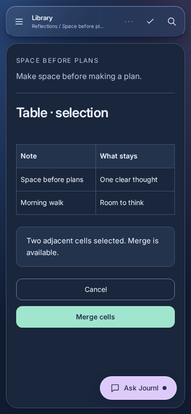
SHA256 e389ece471eb2f448dad57f25cee57659efba1a9d549a096e36dd827ba3ec284

SHA256 5dc502f1f8dc25847f0e61ea422abdee5be481a075739778f6aea4481c0a3c39
Table · merge-disabled
table-state-merge-disabledActions and implementation pointers
+ New page · Journal · Explore · All pages · ⌄ · Reflections · › · Reading · Cancel · Done · Ask Journl · Today’s Journal · Close · Instant · Thinking
apps/web/src/components/editor/document-toolbar.tsxpackages/better-editor/src/engine/suggestions.tspackages/better-editor/src/ui/context-menu.tsx

SHA256 4a2e1ebb5b882d8bf20fe6fc51369f061928de4a89b5d89e407c7a82f3f49206

SHA256 b3288740c7f4819d999ca069bd7cdc7c17ba3477c223a59929efe70c7ddaf567

SHA256 01bc0af995a34c8789cfc0748f60238ab1efe76f159877c632e249cdd145caa7

SHA256 4dfe955775c4567a125fbbb79f82ecb728f4dfe76929ee4be405dec0434a357d
Table · split
table-state-splitActions and implementation pointers
+ New page · Journal · Explore · All pages · ⌄ · Reflections · › · Reading · Cancel · Split cell · Ask Journl · Today’s Journal · Close · Instant · Thinking
apps/web/src/components/editor/document-toolbar.tsxpackages/better-editor/src/engine/suggestions.tspackages/better-editor/src/ui/context-menu.tsx

SHA256 9e783b95adbebe90c0023c3e077398d194b44c257bff30badc968d3e4b84cdb1

SHA256 41e8ed55688725ed8dd0ebaf615857cd413f33f53840b68e06935eab5ec2956a

SHA256 13e8c74c8db8fc1bc035181533081e733c18735806367fa0a8a37baf61f93d9c

SHA256 bcca29cd64b43a649f467385045930a57ddb181081af42727b55ad4dfae93dfb
Table · resize
table-state-resizeActions and implementation pointers
+ New page · Journal · Explore · All pages · ⌄ · Reflections · › · Reading · Cancel · Done · Ask Journl · Today’s Journal · Close · Instant · Thinking
apps/web/src/components/editor/document-toolbar.tsxpackages/better-editor/src/engine/suggestions.tspackages/better-editor/src/ui/context-menu.tsx

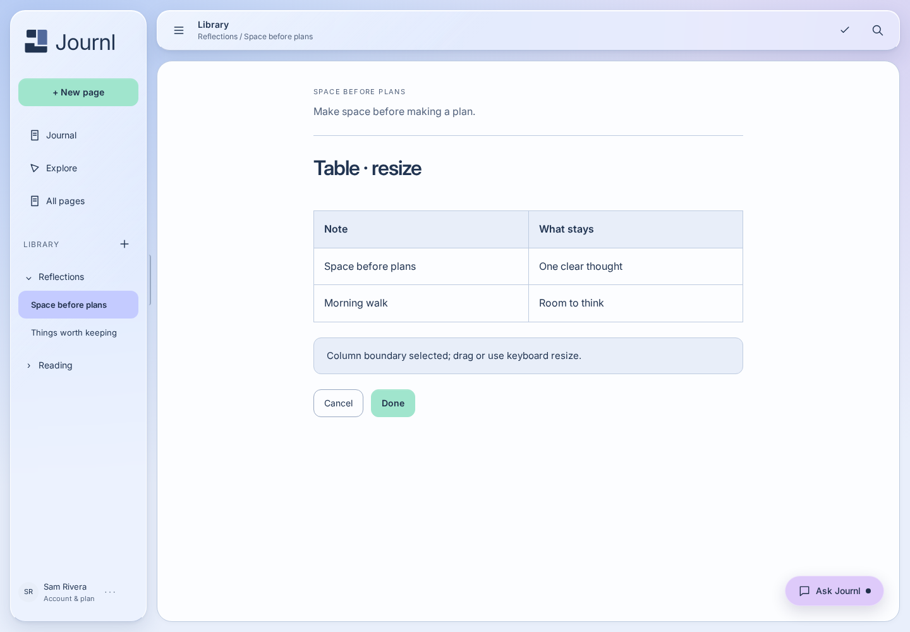
SHA256 f8242da4d8c74c576091944e10fa783a6359fabd561f37536672541c50374baf

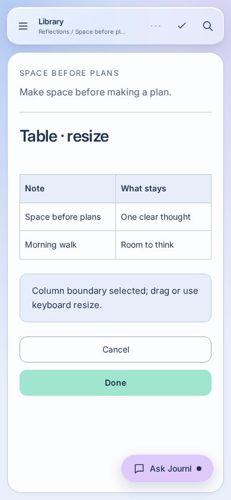
SHA256 2127e0dbfa551351d43bcfe12e2dcbaf44f737dd0f2e7d55e1e5a780dd179ab2

SHA256 709041789c72a755cc41d1741c3294c5e1a8df7d9ff07adfd892afdced854bd1

SHA256 c1e4833d75c1f5536f5bf9ebad9fc0b3587450b27e46053df82d85e42e2acf42